Mathematical description of models in the bmstate package
Juho Timonen
8th Nov 2025
math.Rmd
library(bmstate)
#> Attached bmstate 0.3.1. Type ?bmstate to get started.
library(ggplot2)
theme_set(theme_bw())Multistate hazard model
States and transitions
In a multistate model, we can represent the possible transitions between states as directed edges of a graph whose nodes correspond to states . The transitions that start from the same node are all at risk simultaneously when the system is in this state. The transitions that are at risk simultaneously are competing, meaning that occurrence of one transition censors the other ones.
Below is an example multistate system.
tmat <- transmat_illnessdeath()
tmat$plot()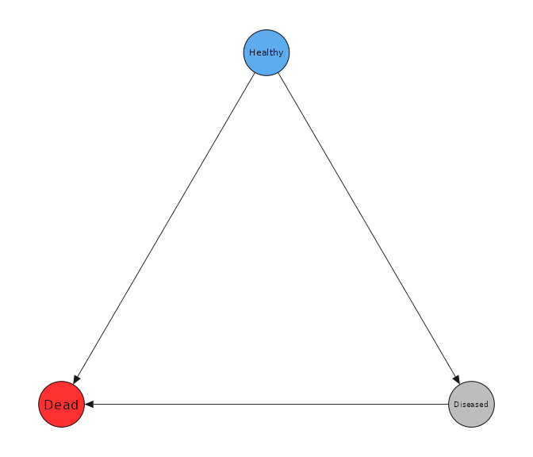
tmat$states_df()
#> state_idx state terminal source
#> 1 1 Healthy FALSE TRUE
#> 2 2 Diseased FALSE FALSE
#> 3 3 Dead TRUE FALSE
tmat$trans_df()
#> trans_idx prev_state state trans_char trans_type
#> 1 1 1 2 Healthy -> Diseased 1
#> 2 2 1 3 Healthy -> Dead 2
#> 3 3 2 3 Diseased -> Dead 2Hazard model
For each transition and observation unit (subject) , the hazard rates , , are modeled as
where
- represents the baseline hazard for transition
-
is an integer indexing the type (
trans_type) of transition - is the regression coefficient for transition type
- includes time-independent covariates for unit
We group transitions that end in the same state together to have the same transition type.
el <- parse(text = paste0("lambda[n]^(", c(1, 2, 3), ")"))
tmat$plot(edge_labs = el, edge.label.cex = 1.5)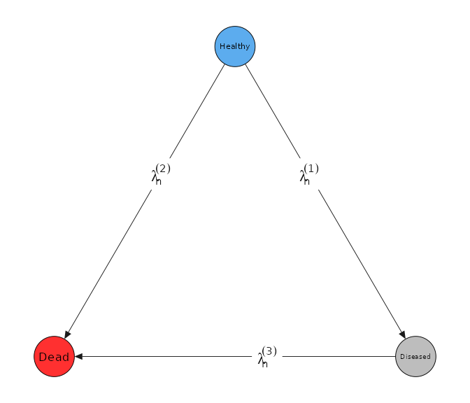
Baseline hazards
Each log baseline hazard is modeled nonparametrically so that where is a constant and is time-dependent variation modeled using B-splines. The knot locations for the splines are same for all transitions.
Priors
Currently the package uses a standard normal prior for the coefficients . The prior for the weights of the spline basis functions is set hierarchically so that transitions of same type have a shared mean. Also the average log hazard rates have a hierarchical prior so that transitions of the same type have a shared mean. This prior mean is estimated from the data using a standard Cox proportional hazards model fit.
You can view the prior in the Stan code for example like this.
stan_lines <- readLines(default_stan_filepath())
line_idx <- which(grepl(stan_lines, pattern = "HAZARD PARAM PRIOR"))
stan_lines_prior <- stan_lines[line_idx[1]:line_idx[2]]
prior_stan_code <- paste(stan_lines_prior, collapse = "\n")
cat(prior_stan_code)
#> // HAZARD PARAM PRIOR
#> if(do_haz == 1){
#> if(nc_haz > 0){
#> for(k in 1:nc_haz){
#> beta_oth[1, k] ~ normal(0, 2);
#> }
#> }
#> if(I_xpsr==1){
#> beta_xpsr[1, 1] ~ normal(0, 1); // only if has pk submodel
#> }
#>
#> // Baseline hazard base level
#> sig_w0[1] ~ normal(0, 3);
#> to_vector(z_w0[1]) ~ std_normal();
#>
#> // Baseline hazard spline weights
#> to_vector(mu_weights[1]) ~ normal(0, 1);
#> to_vector(sig_weights[1]) ~ normal(0, 0.3);
#> to_vector(z_weights[1]) ~ std_normal();
#> }
#> // END HAZARD PARAM PRIORUsing custom Stan code
stan_lines <- readLines(default_stan_filepath())
full_stan_code <- paste(stan_lines, collapse = "\n")You should be able to write full_stan_code to some file,
edit that file, and set
options(bmstate_stan_file = path_to_your_file). If a path
to custom Stan model code has been set, the correctness of package
functionality cannot be guaranteed. However, it should be safe to change
for example just the prior of some parameter from, say,
normal(0, 1) to student_t(4, 0, 1) for
example.
Likelihood evaluation
Binary matrix representation of observed data
For each subject , the state transition times divide the follow-up time period into intervals. We assume as the start time of the first interval and for use to denote the end time of the th interval. Furthermore, let be the initial state and to denote the state that subject was in at the end of the time interval.
We use the binary variable to indicate whether transition occurred at the end of the th time interval for unit . Another binary variable indicates whether unit was at risk for transition during the th time interval. We collect the entire observed multistate path (event sequence) data into where , and contain the transition indicator, risk indicator, and interval time data for unit , respectively.
We generate example data for a single subject here and plot the realized path.
set.seed(2344)
mod <- create_msm(tmat, n_grid = 12) # set very low n_grid for demo
h0_true <- rep(1e-3, 3)
mod$set_prior_mean_h0(h0_true) # has no effect for simulation
dat <- mod$simulate_data(N_subject = 1, w0 = h0_true, truncate = FALSE)
#> Generating 1 paths
dat$paths$plot_paths(truncate = TRUE, alpha = 1) + ggtitle("")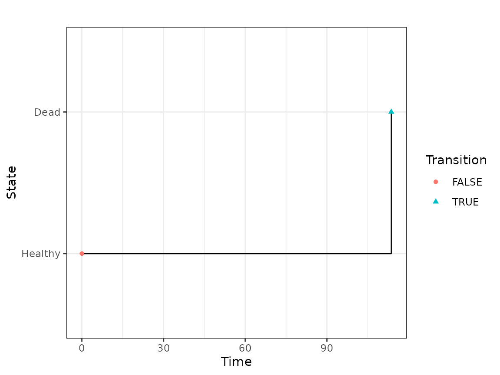
Here we plot the corresponding binary values
and
in
matrices transition and at_risk,
respectively.
sd <- create_stan_data(mod, dat)
a <- plot_stan_data_matrix(mod, sd, "transition", 1)
b <- plot_stan_data_matrix(mod, sd, "at_risk", 1)
gridExtra::grid.arrange(a, b, nrow = 1, ncol = 2)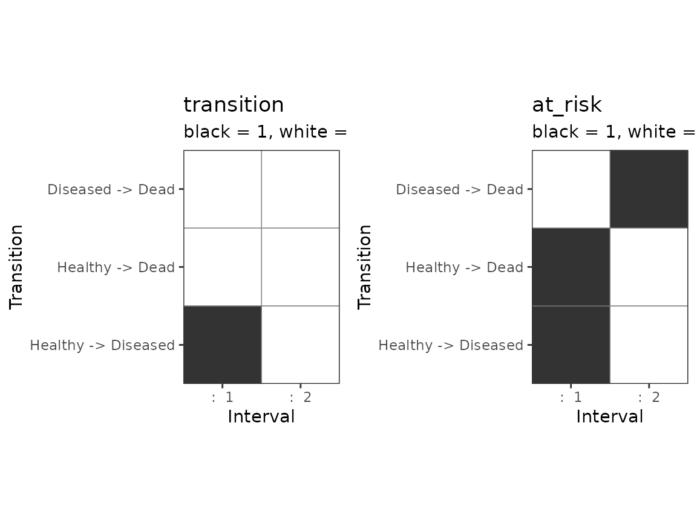
Likelihood formula
The log likelihood of the path data is (Kneib and Hennerfeind 2008)
where contains the baseline hazard parameters and regression coefficients .
Numerical integration
The package relies on numerical integration of the hazard functions to evaluate the likelihood. The integration step size is the max time divided by number of grid points, which we can check here.
delta_grid <- mod$get_tmax() / mod$get_n_grid()
a <- c(delta_grid, sd$delta_grid)
names(a) <- c("expected delta_grid", "found delta_grid")
print(a)
#> expected delta_grid found delta_grid
#> 83.33333 83.33333We demonstrate the integration grid with an example hazard function.
w <- c(0.2, 0.3, 0.5, -0.5, 0, 0.1)
h0 <- 0.001
plot_stan_data_integral(mod, sd, 1, h0, w) # first interval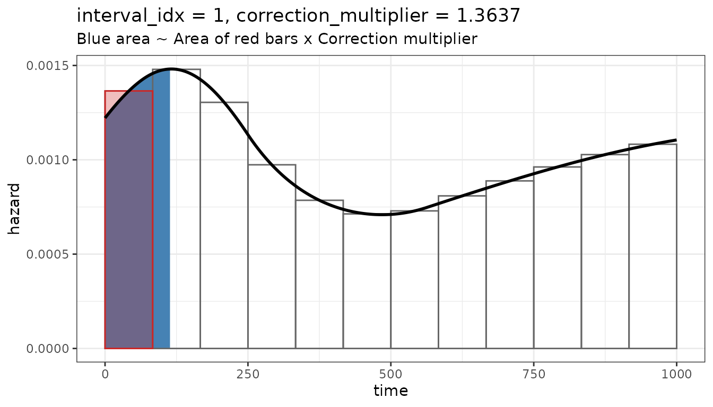
plot_stan_data_integral(mod, sd, 2, h0, w) # second interval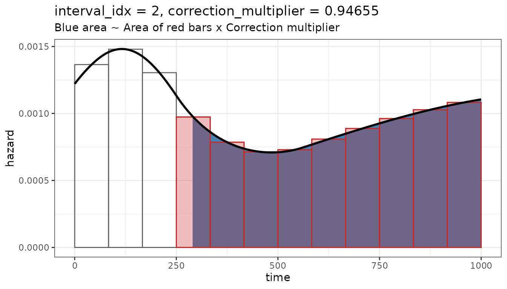
State visit risk prediction
We often ultimately want the model to be able to predict, for a given subject, the probability that a particular state is visited at least once before time , given an initial state at time . We denote this probability by .
Path generation
For any subject, which does not need to be part of the training data,
we can generate a number of state paths starting from
at time
.
This can be done via the generate_paths() function. For
drawing the arrival times for a non-homogeneous Poisson process in path
generation, we use the thinning algorithm (Lewis
and Shedler 1979).
The probability
can then be estimated as the proportion of paths in which
was visited before time
.
This can be done via the function
p_state_visit_per_subject().
Kolmogorov forward equations
Generator matrix
If the transition matrix of the multistate model has no self-loops, it is a continuous-time Markov process (Norris 1997). In this special case, we can define a generator matrix , where is called the transition rate from state to state . The transition rate for is if the corresponding transition is not possible, and otherwise it is given by the corresponding hazard function. Additionally, for all diagonal values .
Transition probability matrix
We also define a transition probability matrix , where the element on the th row and th column is the probability that the process is in state at time , given that it started in state at time . The Kolmogorov forward equations are and we can solve using the initial condition .
State occupancy probability
The function p_state_occupancy() can be used to compute,
for a set of output times
,
the probability that a subject occupies the a certain state
given their state
at the initial time. For terminal states, the state occupancy
probability at time
is the state visit probability
.
Examples of multistate models
In this section, we illustrate some common multistate models.
N_sub <- 1000
# Plot event time distribution
plot_time_dist <- function(t) {
checkmate::assert_numeric(t)
ggplot(data.frame(Time = t), aes(x = .data$Time)) +
ggdist::stat_halfeye() +
geom_vline(
mapping = NULL,
xintercept = mean(t),
color = "gray20",
lty = 2
)
}Basic survival model
tm <- transmat_survival()
s <- tm$statesThe basic survival model can be seen as a multistate model with two
states: Alive and Dead. The death event corresponds to
transitioning from the state Alive to the terminal state Dead. First we
create a TransitionMatrix. The transition matrix is a
directed graph encoded by a binary matrix.
print(tm)
#> Alive Dead
#> Alive 0 1
#> Dead 0 0
tm$plot()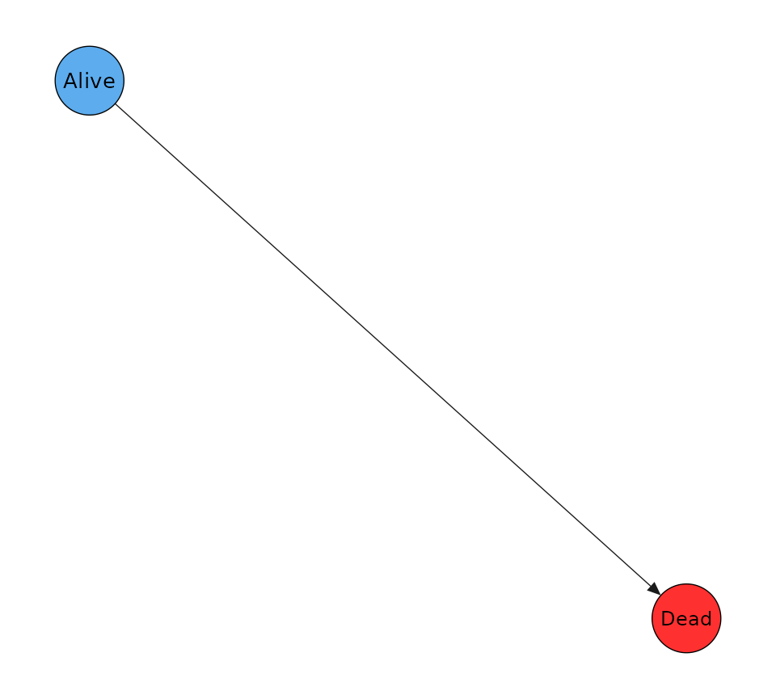
Then we create a MultistateModel using this graph.
tmax <- 3 * 365.25
mod <- create_msm(tm, t_max = tmax)
print(mod)
#> A MultistateModel with:
#> - Hazard covariates: {}
#>
#> A MultistateSystem with:
#> - States: {Alive, Dead}
#> - Number of spline knots: 5Now we can simulate death events with known constant hazard rate
lambda. For this model, the event times should follow an
exponential distribution with mean
.
lambda <- 1e-2
pd <- mod$simulate_data(N_sub, w0 = lambda)
#> Generating 1000 paths
pd$paths$plot_paths()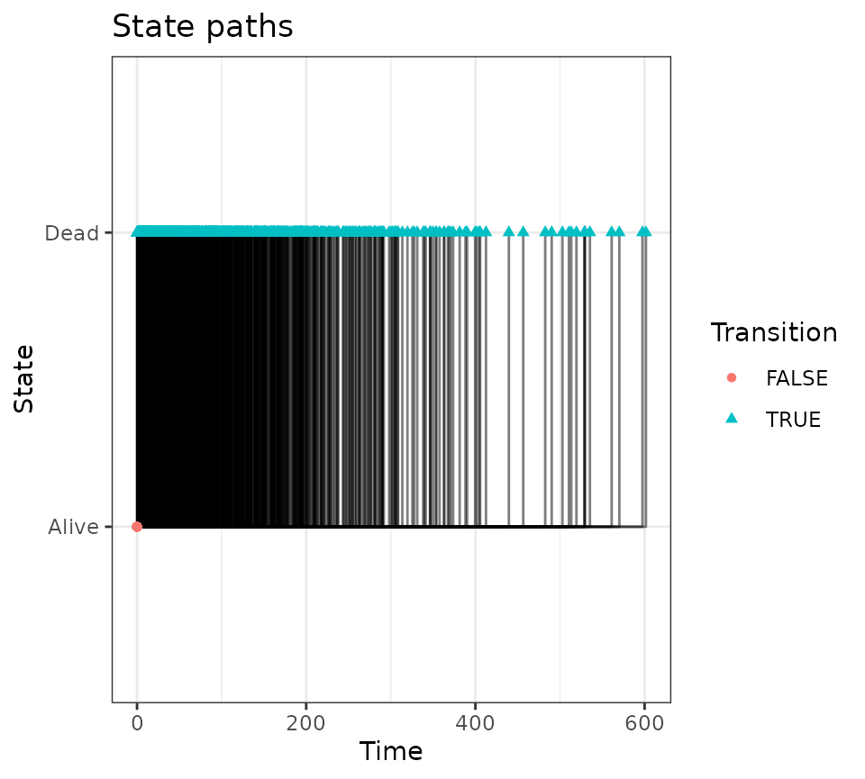
pd$paths$plot_graph()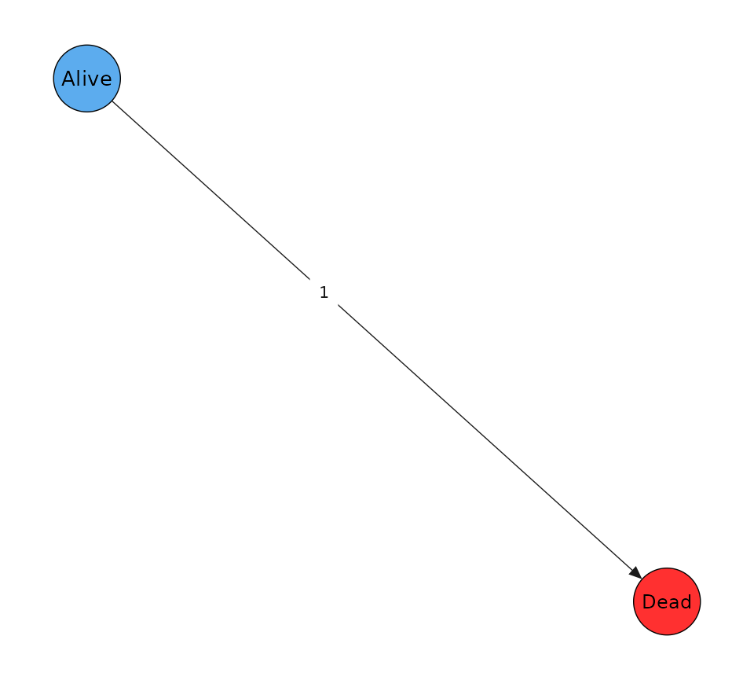
We plot the distribution of event times (i.e., transition times) and the theoretical mean (red line).
times <- pd$paths$transition_times()
plot_time_dist(times) + geom_vline(xintercept = 1 / lambda, color = "firebrick")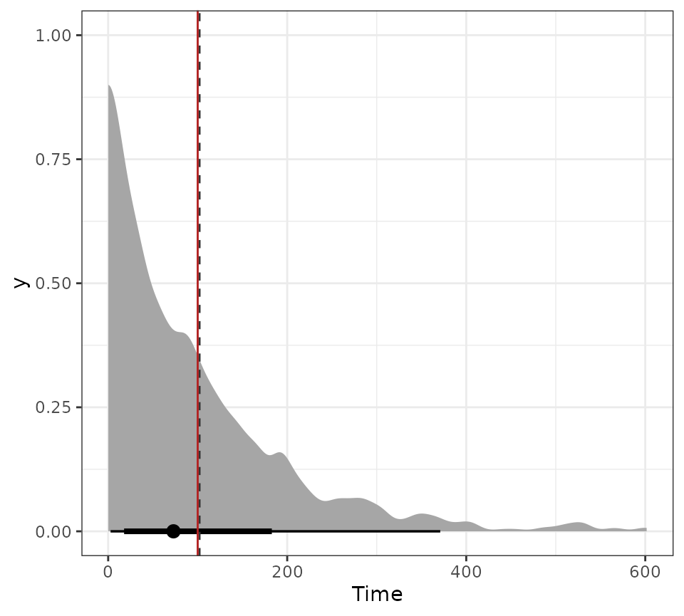
Here generate paths with a lower hazard so that they can get censored before the follow-up ends. We compute the risk of death based on paths and ensure that it is correct, by comparing to two different more analytic implementations of solving a transition probability matrix.
# 1) This is the general way using the package
solve_p <- function(mod, lambda) {
tt <- c(0, mod$system$get_tmax())
P <- solve_trans_prob_matrix(mod$system, t_out = tt, log_w0 = log(lambda))
P[2, 1, ]
}
# 2) This is a special case which can be used if the baseline hazards are constant,
# currently not in the package but we use it to validate that we get the
# Same result
solve_P_consthaz <- function(mod, h0) {
Q_true <- mod$system$intensity_matrix(mod$system$get_tmax(), log(h0))
Matrix::expm(Q_true * mod$system$get_tmax())
}
lambda <- 1e-3
pd <- mod$simulate_data(N_sub, w0 = lambda)
#> Generating 1000 paths
p <- solve_p(mod, lambda)
P <- solve_P_consthaz(mod, lambda)
r <- c(p_state_visit(pd$paths)$prob, p[2], P[1, 2])
names(r) <- c("Paths", "Analytic1", "Analytic2")
print(r)
#> Paths Analytic1 Analytic2
#> 0.6500000 0.6657109 0.6657112Competing risks model
The transition matrix is for a competing risks model can be created like so.
tm <- transmat_comprisk()
print(tm)
#> A B C D
#> A 0 1 1 1
#> B 0 0 0 0
#> C 0 0 0 0
#> D 0 0 0 0
tm$plot()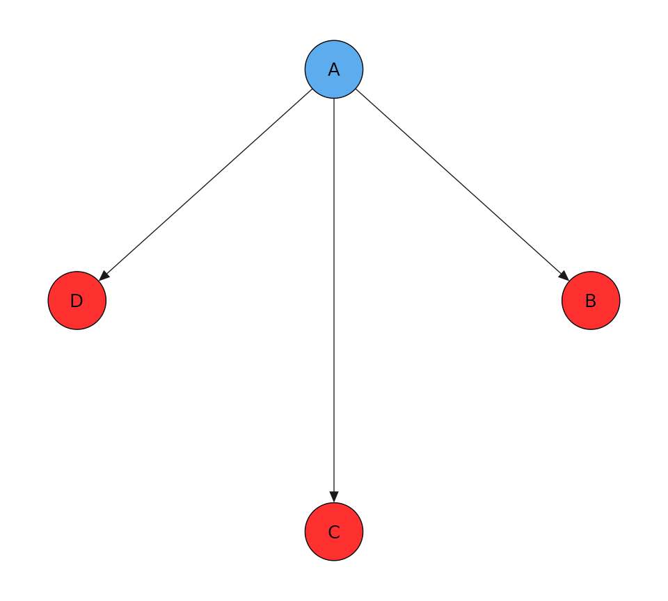
mod <- create_msm(tm, t_max = tmax)This model has 3 possible transitions. Now we can simulate transition
times with known constant hazard rates lambda_1,
lambda_2, lambda_3. Simulating the transition
times is mathematically equivalent to simulating from independent
homogeneous Poisson processes with rates
,
and taking the transition that occurred first. This means that the
transition probabilities should be
lambda <- 1e-2
w0 <- c(lambda, 2 * lambda, 3 * lambda)
print(w0 / sum(w0))
#> [1] 0.1666667 0.3333333 0.5000000
pd <- mod$simulate_data(N_sub, w0 = w0)
#> Generating 1000 paths
pd$paths$plot_paths()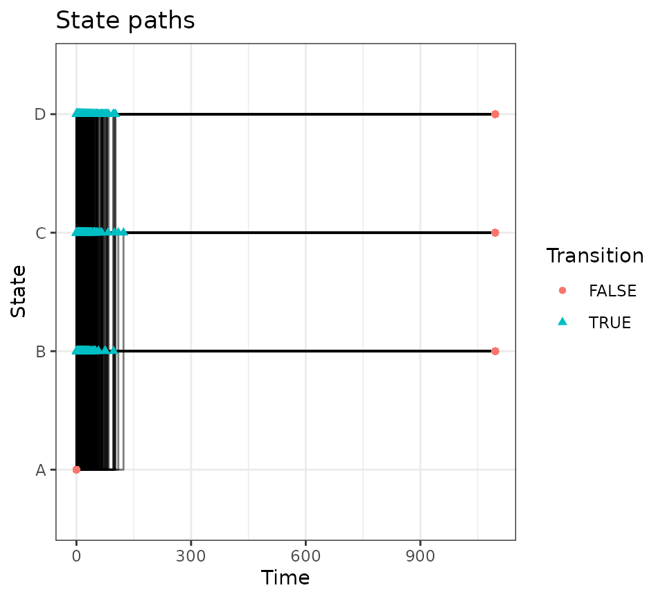
pd$paths$plot_graph()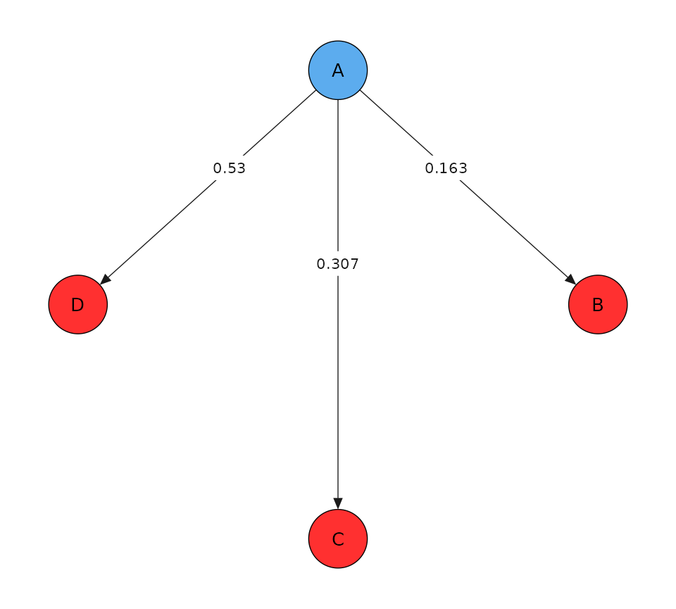
The distribution of event times should be exponentially distributed with mean where is the combined hazard rate. We plot the empirical distribution and the theoretical mean (red line).
times <- pd$paths$as_transitions(truncate = TRUE)$time
plot_time_dist(times) + geom_vline(xintercept = 1 / sum(w0), color = "firebrick")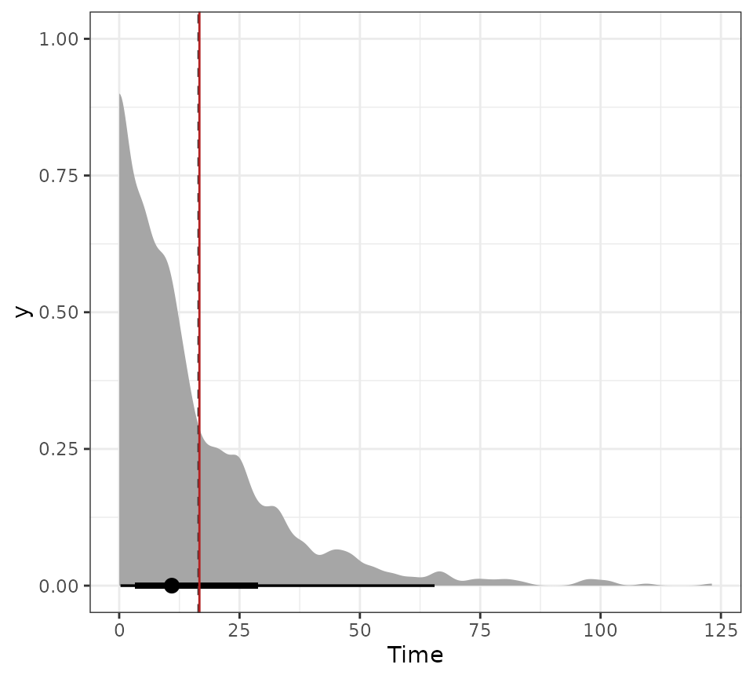
Here we again generate paths with a lower hazard so that they can get censored before the follow-up ends. We compute the probability of different terminal states at the end of follow up based on paths and ensure that they are correct.
pd <- mod$simulate_data(N_sub, w0 = 0.01 * w0)
#> Generating 1000 paths
p <- solve_p(mod, 0.01 * w0)
P <- solve_P_consthaz(mod, 0.01 * w0)
r <- rbind(p_state_visit(pd$paths)$prob, p[2:4], P[1, 2:4])
rownames(r) <- c("Paths", "Analytic1", "Analytic2")
colnames(r) <- paste0("P(state = ", colnames(r), ")")
print(r)
#> P(state = B) P(state = C) P(state = D)
#> Paths 0.08100000 0.1440000 0.2380000
#> Analytic1 0.08030481 0.1606096 0.2409144
#> Analytic2 0.08030484 0.1606097 0.2409145Illness-death model
The illness-death model is another common multistate model.
tm <- transmat_illnessdeath()
print(tm)
#> Healthy Diseased Dead
#> Healthy 0 1 1
#> Diseased 0 0 1
#> Dead 0 0 0
tm$plot()
mod <- create_msm(tm)
w0 <- 1e-2
pd <- mod$simulate_data(N_sub, w0 = w0)
#> Generating 1000 paths
pd$paths$plot_paths()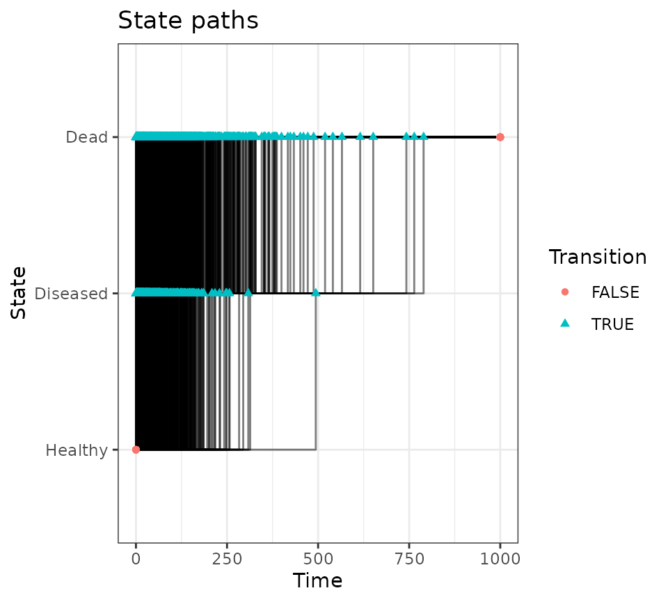
pd$paths$plot_graph()Here we again generate paths with a lower hazard so that they can get censored before the follow-up ends. We compute the probability of death before the end of follow up based on paths and ensure that it is correct.
h0_true <- 0.5 * 1e-3
h0_true_vec <- rep(h0_true, 3)
h0_true_vec[2] <- 0.1 * h0_true
h0_true_vec[3] <- 5 * h0_true
pd <- mod$simulate_data(N_sub, w0 = h0_true_vec)
#> Generating 1000 paths
p <- solve_p(mod, h0_true_vec)
P_true <- solve_P_consthaz(mod, h0_true_vec)
p_death1 <- p_state_visit(pd$paths)$prob[2]
p_death2 <- p[3]
p_death3 <- P_true[1, 3]
r <- c(p_death1, p_death2, p_death3)
names(r) <- c("Paths", "Analytic", "Analytic2")
print(r)
#> Paths Analytic Analytic2
#> 0.3110000 0.2961619 0.2961618Diamond model
This model is a more complex multistate model.
tm <- transmat_diamond()
print(tm)
#> A B C D
#> A 0 1 1 1
#> B 0 0 1 1
#> C 0 1 0 1
#> D 0 0 0 0
tm$plot()
mod <- create_msm(tm)
w0 <- 1e-2
pd <- mod$simulate_data(N_sub, w0 = w0)
#> Generating 1000 paths
pd$paths$plot_paths()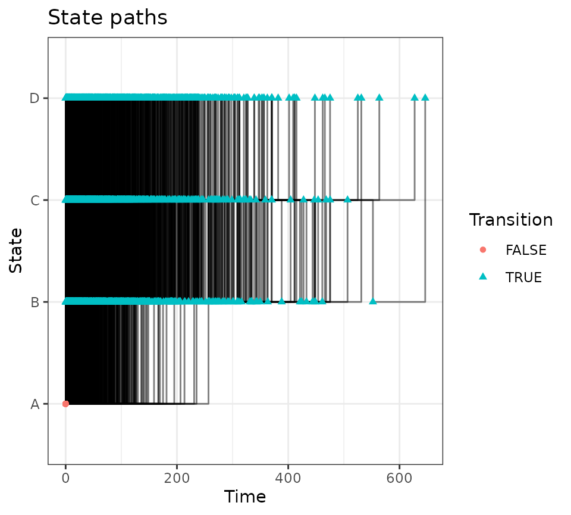
pd$paths$plot_graph()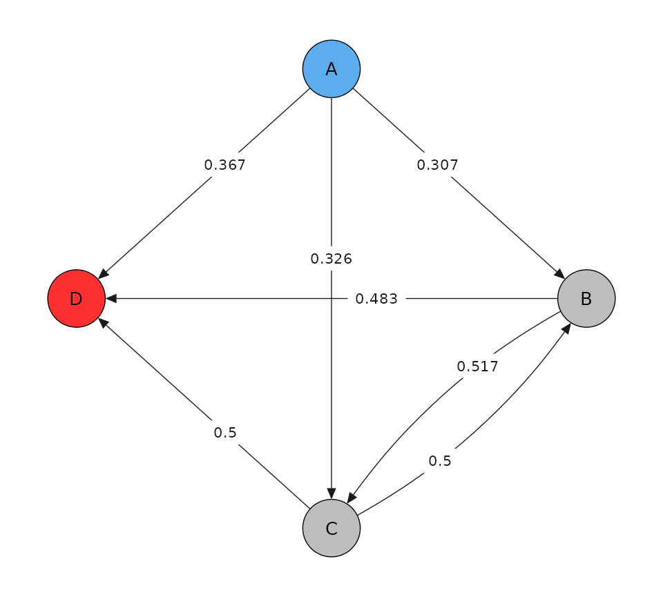
Here we again generate paths with a lower hazard so that they can get censored before the follow-up ends. We compute the probability of death before the end of follow up based on paths and ensure that it is correct.
h0_true <- 0.5 * 1e-3
h0_true_vec <- rep(h0_true, 7)
h0_true_vec[3] <- 0.1 * h0_true
h0_true_vec[5] <- 5 * h0_true
h0_true_vec[7] <- 20 * h0_true
P_true <- solve_P_consthaz(mod, h0_true_vec)
p_death3 <- P_true[1, 4]
w0 <- h0_true_vec
pd <- mod$simulate_data(N_sub, w0 = w0)
#> Generating 1000 paths
p <- solve_p(mod, w0)
p_death1 <- p_state_visit(pd$paths)$prob[3]
p_death2 <- p[4]
r <- c(p_death1, p_death2, p_death3)
names(r) <- c("Paths", "Analytic", "Analytic2")
print(r)
#> Paths Analytic Analytic2
#> 0.5270000 0.5459059 0.5459058General multistate models
General multistate models can have multiple terminal states and various transitions.
tm <- transmat_full(state_names = LETTERS[1:5], sources = 1, terminal = c(4, 5))
print(tm)
#> A B C D E
#> A 0 1 1 1 1
#> B 0 1 1 1 1
#> C 0 1 1 1 1
#> D 0 0 0 0 0
#> E 0 0 0 0 0
tm$plot()
mod <- create_msm(tm)
pd <- mod$simulate_data(N_sub, w0 = 1e-3)
#> Generating 1000 paths
pd$paths$plot_paths()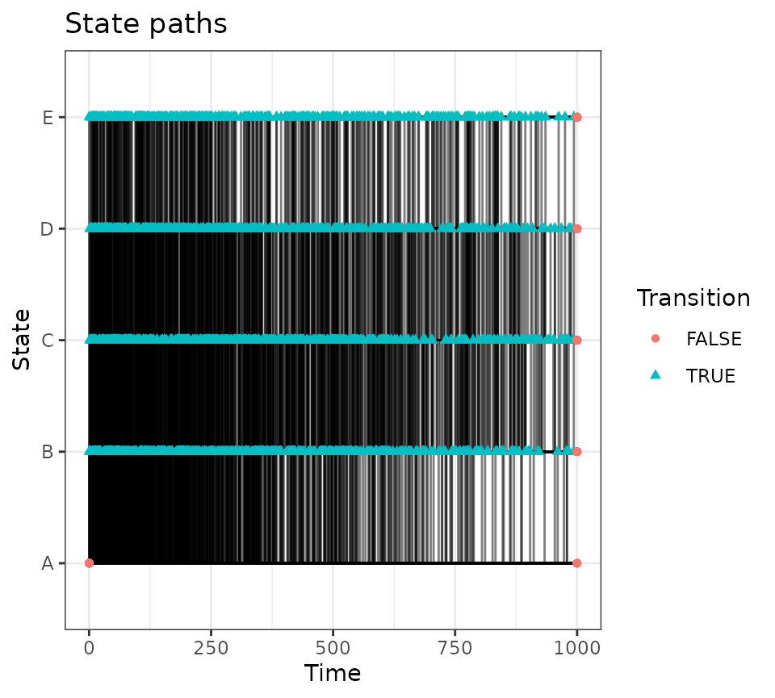
pd$paths$plot_graph()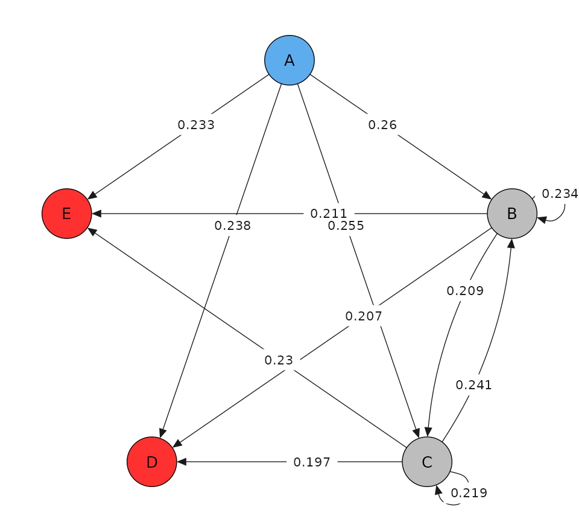
Some of the paths may not reach a terminal state before
t_max, meaning they get censored.
pd$paths$prop_matrix()
#> to
#> from A B C D E no event
#> A 0.0000000 0.2600000 0.2550000 0.2380000 0.2330000 0.0140000
#> B 0.0000000 0.2339545 0.2091097 0.2070393 0.2111801 0.1387164
#> C 0.0000000 0.2412281 0.2192982 0.1973684 0.2302632 0.1118421
#> D 0.0000000 0.0000000 0.0000000 0.0000000 0.0000000 1.0000000
#> E 0.0000000 0.0000000 0.0000000 0.0000000 0.0000000 1.0000000